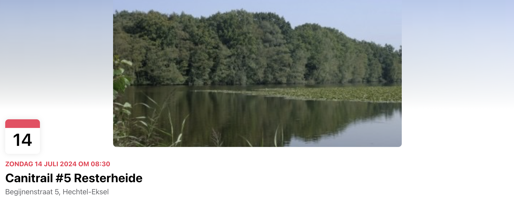
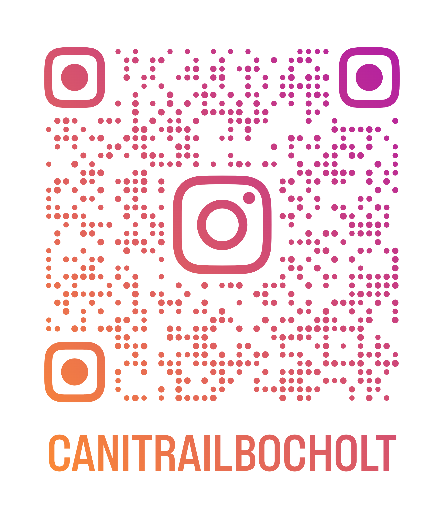

Volgend evenement
Zondag 14 Juli 8:30 @ Resterheide
Meer informatie via onze facebook groep of hier klikken
Canitrail Bocholt is een "social run" community waarbij plezier centraal staat.
Wat is Canitrail?
Een sport voor mens en hond waarbij samen beleven en genieten van het hardlopen in de natuur centraal staat.
We hanteren het principe van "Social Runs", geen "moetjes", "samen uit, samen thuis."
Ik wil meedoen maar ik ben een beginner of ik kan nog maar net 5km lopen?
Het is géén probleem als je pas gestart bent. Hoe beter de conditie van jezelf (en je hond natuurlijk), hoe verder je kan gaan.
We passen het tempo van de groep aan zodat iedereen comfortabel mee kan.
In groep kan je dikwijls wel nét dat tikkeltje harder of verder ;-)
Qua afstand is het wel belangrijk dat je aangeeft wat kan. Alles is bespreekbaar; dan kunnen we de route beter bepalen.
In de praktijk werken we met lusjes, waardoor jij wel een deel kan aansluiten.
Bijvoorbeeld in totaal 12 km waarvan lus 1; 4km en lus 2; 8km.
TEMPO IS VAN GEEN BELANG
Ik ben niet zeker of dit iets is voor mijn hond?
Als je een sociale hond hebt, kom dan gewoon eens meedoen. Je bent niet de eerste nieuweling en de reacties zijn altijd positief. In praktijk zal je zien dat je hond direct meegaat in de groep.
Voorlopig kan je voor onze runs terecht op facebook: Klik hier
We zijn ook actief op Instagram. https://www.instagram.com/canitrailbocholt
